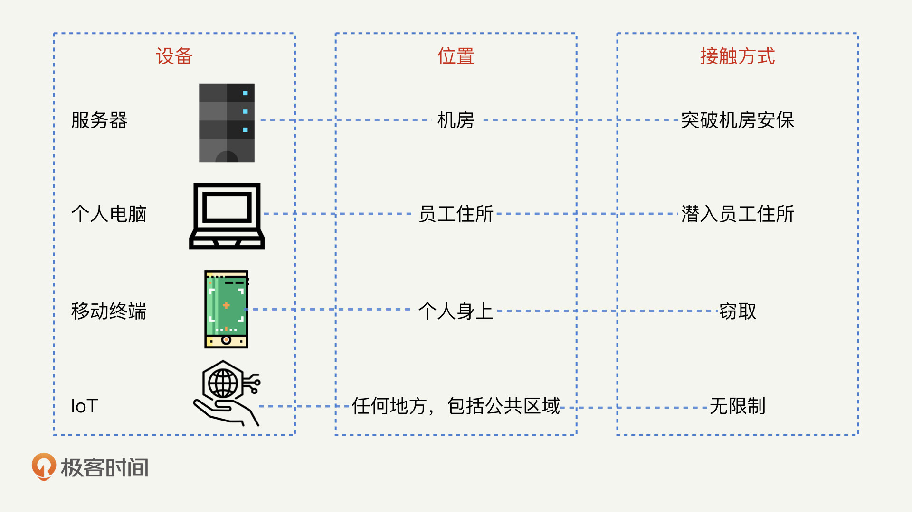

- 00 开篇词 别说你没被安全困扰过.md.html
- 01 安全的本质：数据被窃取后，你能意识到问题来源吗？.md.html
- 02 安全原则：我们应该如何上手解决安全问题？.md.html
- 03 密码学基础：如何让你的密码变得“不可见”？.md.html
- 04 身份认证：除了账号密码，我们还能怎么做身份认证？.md.html
- 05 访问控制：如何选取一个合适的数据保护方案？.md.html
- 06 XSS：当你“被发送”了一条微博时，到底发生了什么？.md.html
- 07 SQL注入：明明设置了强密码，为什么还会被别人登录？.md.html
- 08 CSRF_SSRF：为什么避免了XSS，还是“被发送”了一条微博？.md.html
- 09 反序列化漏洞：使用了编译型语言，为什么还是会被注入？.md.html
- 10 信息泄露：为什么黑客会知道你的代码逻辑？.md.html
- 11 插件漏洞：我的代码看起来很安全，为什么还会出现漏洞？.md.html
- 13 Linux系统安全：多人共用服务器，如何防止别人干“坏事”？.md.html
- 14 网络安全：和别人共用Wi-Fi时，你的信息会被窃取吗？.md.html
- 15 Docker安全：在虚拟的环境中，就不用考虑安全了吗？.md.html
- 16 数据库安全：数据库中的数据是如何被黑客拖取的？.md.html
- 17 分布式安全：上百个分布式节点，不会出现“内奸”吗？.md.html
- 18 安全标准和框架：怎样依“葫芦”画出好“瓢”？.md.html
- 19 防火墙：如何和黑客“划清界限”？.md.html
- 20 WAF：如何为漏洞百出的Web应用保驾护航？.md.html
- 21 IDS：当黑客绕过了防火墙，你该如何发现？.md.html
- 22 RASP：写规则写得烦了？尝试一下更底层的IDS.md.html
- 23 SIEM：一个人管理好几个安全工具，如何高效运营？.md.html
- 24 SDL：怎样才能写出更“安全”的代码？.md.html
- 25 业务安全体系：对比基础安全，业务安全有哪些不同？.md.html
- 26 产品安全方案：如何降低业务对黑灰产的诱惑？.md.html
- 27 风控系统：如何从海量业务数据中，挖掘黑灰产？.md.html
- 28 机器学习：如何教会机器识别黑灰产？.md.html
- 29 设备指纹：面对各种虚拟设备，如何进行对抗？.md.html
- 30 安全运营：“黑灰产”打了又来，如何正确处置？.md.html
- 加餐1 数据安全：如何防止内部员工泄露商业机密？.md.html
- 加餐2 前端安全：如何打造一个可信的前端环境？.md.html
- 加餐3 职业发展：应聘安全工程师，我需要注意什么？.md.html
- 加餐4 个人成长：学习安全，哪些资源我必须要知道？.md.html
- 加餐5 安全新技术：IoT、IPv6、区块链中的安全新问题.md.html
- 模块串讲（一）Web安全：如何评估用户数据和资产数据面临的威胁？.md.html
- 模块串讲（三）安全防御工具：如何选择和规划公司的安全防御体系？.md.html
- 模块串讲（二）Linux系统和应用安全：如何大范围提高平台安全性？.md.html
- 结束语 在与黑客的战役中，我们都是盟友！.md.html
- 捐赠
加餐5 安全新技术：IoT、IPv6、区块链中的安全新问题
加餐5 安全新技术：IoT、IPv6、区块链中的安全新问题
你好，我是何为舟。欢迎来到安全专栏的第5次加餐时间。
随着科技的快速发展，各种新的技术和概念不断出现，持续出现的新技术会不断推动安全的发展。虽然，每一个新技术都会衍生出新的安全威胁和隐患，但是，这些新的安全问题也正是安全行业保持活力的源泉。所以，对于安全人员来说，这些新技术的出现既是一种挑战，也是一种机遇。
近几年，IoT、IPv6和区块链是三个热度很高的新技术，我也最常听到三个热词。今天，我们就一起来探讨一下，这几个新技术都面临哪些独特的安全问题。
独特的IoT安全
毫无疑问，IoT（Internet of Things，物联网）是最近十年来比较火热的一个技术。对比于当前的网络环境，IoT的网络主要有以下几个特点：
- 设备更多：每一件小的物品都有可能成为联入互联网的设备
- 设备性能更低：受限于体积和供电量，单台设备能够搭载的硬件配置都不高
- 更加开放：由于设备的数量和类型众多，无法统一标准，因此IoT的网络环境也更加开放
那么，这些特点会给安全性带来哪些新的挑战呢？关于这个问题，我推荐你玩一玩《看门狗》这款游戏，它很好地描绘了一个未来IoT城市中会面临的各类安全问题。那在此之前，我先和你分享一下我对这些新挑战的思考。
我认为最明显的问题就是认证更加复杂了。
在使用电脑或者手机连入网络的时候，我们可以手动输入密码来完成认证。但是，当我们想要将各类小硬件连入网络的时候，没有键盘和屏幕可以供我们输入密码。为了解决这个认证问题，目前小米等IoT厂商的解决方案是，先让手机直接控制设备，配置好WiFi密码后，再让设备连入网络。
但是，这其实又引发了一个新的问题，如何确认是你本人在控制设备，而不是黑客呢？针对这个问题，现在也有对应的解决方案，那就是在短时间内开放设备的控制权限，限制手机在这个时间内完成对设备的控制。
仔细观察的话，你会发现这个解决方案有一个假设前提：黑客没办法在短时间内发现并控制设备。在当前的环境下，这个前提是成立的。但是随着技术的发展，IoT设备可能充斥在我们身边的每一个角落里，当有一个设备被黑客控制了之后，它很可能会时刻监控这周围的环境，一旦发现其他的设备开放控制权限，就会立即黑入。可以说，通过这样的攻击方式，任何一个设备都有可能被黑客所控制。
因此，如何确保IoT中设备与网络、设备与设备之间的通信是可信的，是未来认证技术需要面临的主要挑战之一。
其次，我认为物理攻击会越来越流行。
物理攻击实际上是安全领域内的降维打击。 换句话说，当底层的硬件被黑客控制之后，我们就无法保障运行在硬件之上的系统和软件的安全性了。
IoT的发展，事实上正让物理攻击变得越来越容易。我总结了一张物理攻击的发展过程图，你可以看到，随着IoT越来越小、越来越智能，和我们的联系越来越紧密，物理攻击的难度也变得越来越低。在未来，公共区域内的所有设备甚至都有可以成为黑客的囊中之物。

因此，如何对物理攻击进行有效的防控，也是未来安全中需要解决的主要挑战之一。
除了带来新的安全挑战，IoT能够造成的安全威胁也变得更加复杂了。
目前来说，黑客利用IoT设备发起的最主要的攻击还是DDoS攻击，即黑客利用海量的IoT设备向目标服务器发送巨大的网络流量，导致服务器无法响应正常请求。
随着IoT的发展，黑客能够控制的设备越来越多，能够导致的影响也会越来越大。你一定在很多电影中看到过类似的情景，比如，黑客通过操纵汽车控制医疗设备等方式，导致人员伤亡。
因此，如何保护IoT设备免受黑客的攻击，同样会成为未来安全的主要挑战之一。
IPv6对安全的影响
因为IPv4的地址空间短缺问题，IPv6是国家重点推进的一个技术方向。目前三大运营商已经完成了改造，各大互联网公司也已经接到了兼容IPv6的强制要求，我相信国内应该会很快推广和普及IPv6。
IPv6和IPv4相比最大区别就是IP地址变得非常庞大了。那么，庞大的IP地址对于安全来说，又意味着什么呢？
我认为对于黑客来说，最大的影响就是网络扫描不再可能。
我们知道，找到攻击目标是黑客发起攻击的第一步。因此，很多黑客会通过扫描网络来发现目标。目前，性能最优的扫描工具是Masscan，它能够在5分钟内扫遍全部IPv4的地址空间。
而IPv6的地址空间是IPv4的2^96倍，黑客想要利用现有的扫描工具快速遍历IPv6的地址空间，显然是不可能的。因此，黑客就只能通过其他方式去精准定位目标了。
除了对黑客有影响以外，庞大的IP地址对公司安全来说，也同样是一种负担。
IP地址变多就意味着黑客手中的IP资源变多了，同时，IPv6的高变化频率还会让同一个设备的IP经常性地发生变化。因此，使用了IPv6之后，我们就很难利用黑名单对IP进行标记和处罚了。
另外，仍然有待观察的一点是，IPv6的复用性是否会比IPv4更低。
IPv4由于地址匮乏，有很高的复用性（一个学校可能都在共用一个IP地址），这让我们很难根据IP去定位到一个具体的位置或者人。
而IPv6的地址空间是足够的（每一粒沙子都能分配到一个IP地址），因此，IP复用就不再是一个刚需了。所以，如果IPv6的复用性远低于IPv4的话，就能让IP的定位变得更准确。那么对于安全工作来说，想要找到黑客也会更加容易。
区块链中的安全问题
最后，我们再来聊一聊近两年兴起的区块链。目前，区块链最成功的应用形式，就是以比特币为代表的各类虚拟货币。那么，比特币和区块链的安全性如何呢？它们又面临什么样的安全威胁呢？下面，我们一起来看。
我们都知道，区块链的思想是去中心化，即将数据和算力分散到每一个小的计算节点中，最终，以少数服从多数的形式来完成数据的计算和存储。这实际上是一种对完整性的保障。这么说你可能还不理解，我举个例子。
以货币为例，我们现在通过支付宝、微信等电子货币来完成日常交易，事实上是将钱交由支付宝和微信这样的中心机构进行集中保管。而对于支付宝、微信来说，理论上是可以对用户的余额进行篡改的，不过，因为受到了多方面限制，这一操作是无法实现的。
但是在比特币中，因为不存在中心机构，每个用户的余额由所有人共同保管，因此没有任何一个节点可以实现篡改。
但如果你仔细想想的话，就会发现这种近乎完美的完整性保障，是通过牺牲机密性来完成的。也就是说，在支付宝中，你无法知道其他用户的余额，但是在比特币中，每一笔交易和每一个用户的余额都是公开的信息，因此比特币不提供任何针对机密性的保护措施（比如，你可以在blockchain看到所有的比特币信息）。
尽管比特币本身的完整性无可挑剔，但仍然无法阻止由于用户个人密钥丢失而导致的资产损失。这就好比你安装了一个特别结实的门，但只要钥匙丢了，门的存在就毫无意义了。事实上，目前大部分的比特币安全事件，都是黑客成功盗取了用户或者公司系统的比特币密钥之后，再去盗取对应账号的余额。
另外，比特币是目前黑客们主要使用的货币之一。其原因在于，它是匿名的（注意：匿名不是机密性，匿名是指你无法通过比特币的账号，关联到某个具体的人）。这也就保证了，即使警方知道了黑客的账户，也没办法抓到黑客。而且，由于比特币的去中心化，警方也没办法封停黑客的账户，追回被盗的比特币。
所以，比特币这样一种去中心化且匿名的货币体系，既不保险，也不利于政府的管控，因此国内对于以区块链为基础的电子货币落地，始终不认可。
总结
今天，我们主要对 IoT、IPv6和区块链这三个热门技术及其安全性进行了盘点。这些新的技术都具备其独特的应用场景，也都带有独特的安全问题。这些问题既可能是这些技术本身所存在的一些缺陷，也可能是对已有的安全防御工作产生的威胁。
我们不仅要对这些新技术进行持续的关注，还要思考它们会产生的新安全需求，然后去学习对应的新知识。这也是安全人员提升自我价值，保持思维活力的有效手段。
思考题
最后，咱们来看一道思考题。
除了我们今天讲的这三种技术，你还接触过哪些新的技术呢？不妨和我的一样，把你对这些新技术的安全思考都写下来。
欢迎留言和我分享你的思考和疑惑，也欢迎你把文章分享给你的朋友。我们下一讲再见！
© 2019 - 2023 Liangliang Lee. Powered by gin and hexo-theme-book.